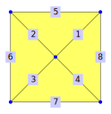
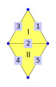
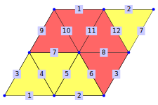
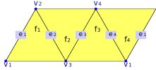

In sections 3.3 and 3.4 the concepts of vertex-edge-paths and edge-face-paths were introduced. This chapter documents which methods are available for these paths (in sections 8.1 and 8.3). Then it discusses applications of these paths, namely connectivity (8.6) and orientability (8.7).
This section describes all methods for vertex-edge-paths. Intuitively, vertex-edge-paths describe all paths that are realized by walking only on the vertices and edges of a polygonal complex.
We will illustrate several properties with vertex-edge-paths that are defined on this simplicial surface:
gap> hex := SimplicialSurfaceByDownwardIncidence( > [ [1,7],[2,7],[3,7],[4,7],[5,7],[6,7],[1,2],[2,3],[3,4],[4,5],[5,6],[1,6] ], > [ [1,2,7],[2,3,8],[3,4,9],[4,5,10],[5,6,11],[1,6,12] ]);;
‣ VertexEdgePath( complex, path ) | ( operation ) |
‣ VertexEdgePathNC( complex, path ) | ( operation ) |
Returns: A VertexEdgePath-GAP-object
‣ IsVertexEdgePath( object ) | ( category ) |
Returns: true or false
The method VertexEdgePath constructs a new vertex-edge-path from a polygonal complex and a dense list of positive integers (alternating vertices and edges). The method IsVertexEdgePath checks if a given GAP-object represents such a path.
We illustrate this with two paths on the simplicial surface that was introduced at the start of section 8.1.
gap> alphaPath := VertexEdgePath(hex, [2,2,7,5,5,10,4,9,3,3,7,6,6]); | v2, E2, v7, E5, v5, E10, v4, E9, v3, E3, v7, E6, v6 | gap> omegaPath := VertexEdgePath(hex, [3,9,4,10,5,5,7,6,6,12,1,7,2]); | v3, E9, v4, E10, v5, E5, v7, E6, v6, E12, v1, E7, v2 |
A vertex-edge-path in a polygonal complex is a tuple (v_1, e_1, v_2, e_2, ... ,v_n, e_n, v_{n+1}) such that
The v_i are vertices of the polygonal complex
The e_j are edges of the polygonal complex
For the edge e_j the set of incident vertices is {v_j,v_{j+1}}
gap> circlePath := VertexEdgePath( hex, [1,7,2,8,3,9,4,10,5,11,6,12,1] ); ( v1, E7, v2, E8, v3, E9, v4, E10, v5, E11, v6, E12, v1 ) gap> cloverPath := VertexEdgePath( hex, [1,7,2,2,7,5,5,11,6,6,7,3,3,9,4,4,7,1,1] ); ( v1, E7, v2, E2, v7, E5, v5, E11, v6, E6, v7, E3, v3, E9, v4, E4, v7, E1, v1 )
The elements of a vertex-edge-path can be accessed by using the methods PathAsList (8.1-4), VerticesAsList (8.1-5) and EdgesAsList (8.1-6).
Some shorter (but more ambiguous) constructors are VertexEdgePathByVertices (8.1-2) and VertexEdgePathByEdges (8.1-3).
The NC-version does not check if the given path is a list [v_1,e_1,v_2,e_2,...,v_n,e_n,v_{n+1}] that fulfills these conditions.
‣ VertexEdgePathByVertices( complex, vertexList ) | ( operation ) |
‣ VertexEdgePathByVerticesNC( complex, vertexList ) | ( operation ) |
Returns: a vertex-edge-path or fail
Construct a new vertex-edge-path (8.1-1) from a polygonal complex and a dense list of vertices. Every two adjacent vertices have to be connected by an edge. If there are multiple such edges, the one with the smallest label is used. If the given vertexList is empty, fail is returned.
With this the paths from 8.1-1 can be defined more compactly:
gap> newAlpha := VertexEdgePathByVertices( hex, [2,7,5,4,3,7,6] ); | v2, E2, v7, E5, v5, E10, v4, E9, v3, E3, v7, E6, v6 | gap> alphaPath = newAlpha; true gap> newOmega := VertexEdgePathByVertices( hex, [3,4,5,7,6,1,2] ); | v3, E9, v4, E10, v5, E5, v7, E6, v6, E12, v1, E7, v2 | gap> omegaPath = newOmega; true
An example of the ambiguous nature is this triangular complex:
gap> eye := TriangularComplexByDownwardIncidence( > [[1,2],[2,3],[1,3],[2,4],[3,4],[2,3]], [[1,2,3],[4,5,6]]);; gap> VertexEdgePathByVertices( eye, [1,2,3,4] ); | v1, E1, v2, E2, v3, E5, v4 | gap> VertexEdgePathByVertices( eye, [2,3,2] ); ( v2, E2, v3, E2, v2 )
The NC-version does not check whether the given vertexList consists of vertices in complex and whether every two adjacent vertices are connected by an edge.
‣ VertexEdgePathByEdges( complex, edgeList ) | ( operation ) |
‣ VertexEdgePathByEdgesNC( complex, edgeList ) | ( operation ) |
Returns: a vertex-edge-path
Construct a new vertex-edge-path (8.1-1) from a polygonal complex and a dense list of edges. Every two adjacent edges have to be connected by a vertex. If any vertex position is ambiguous (for example if only one edge is given), the smallest possible vertex is chosen to be traversed first.
With this the paths from 8.1-1 can be defined more compactly:
gap> newAlpha := VertexEdgePathByEdges( hex, [2,5,10,9,3,6] ); | v2, E2, v7, E5, v5, E10, v4, E9, v3, E3, v7, E6, v6 | gap> alphaPath = newAlpha; true gap> newOmega := VertexEdgePathByEdges( hex, [9,10,5,6,12,7] ); | v3, E9, v4, E10, v5, E5, v7, E6, v6, E12, v1, E7, v2 | gap> omegaPath = newOmega; true
An example of the ambiguous nature is this triangular complex:
gap> eye := TriangularComplexByDownwardIncidence( > [[1,2],[2,3],[1,3],[2,4],[3,4],[2,3]], [[1,2,3],[4,5,6]]);; gap> VertexEdgePathByEdges( eye, [2] ); | v2, E2, v3 | gap> VertexEdgePathByEdges( eye, [2,6] ); ( v2, E2, v3, E6, v2 )
The NC-version does not check whether the given edgeList consists of edges in complex.
‣ PathAsList( vertexEdgePath ) | ( attribute ) |
Returns: a list of positive integers
Return the complete vertex-edge-path as a list (with vertices and edges alternating), starting with a vertex.
For some examples from VertexEdgePath (8.1-1) in the simplicial surface from the start of section 8.1:
gap> alphaPath; | v2, E2, v7, E5, v5, E10, v4, E9, v3, E3, v7, E6, v6 | gap> PathAsList( alphaPath ); [ 2, 2, 7, 5, 5, 10, 4, 9, 3, 3, 7, 6, 6 ] gap> omegaPath; | v3, E9, v4, E10, v5, E5, v7, E6, v6, E12, v1, E7, v2 | gap> PathAsList( omegaPath ); [ 3, 9, 4, 10, 5, 5, 7, 6, 6, 12, 1, 7, 2 ] gap> circlePath; ( v1, E7, v2, E8, v3, E9, v4, E10, v5, E11, v6, E12, v1 ) gap> PathAsList( circlePath ); [ 1, 7, 2, 8, 3, 9, 4, 10, 5, 11, 6, 12, 1 ] gap> cloverPath; ( v1, E7, v2, E2, v7, E5, v5, E11, v6, E6, v7, E3, v3, E9, v4, E4, v7, E1, v1 ) gap> PathAsList( cloverPath ); [ 1, 7, 2, 2, 7, 5, 5, 11, 6, 6, 7, 3, 3, 9, 4, 4, 7, 1, 1 ]
‣ VerticesAsList( vertexEdgePath ) | ( attribute ) |
Returns: a list of positive integers
Return the vertices of the vertex-edge-path as a list.
For the examples from VertexEdgePath (8.1-1) in the simplicial surface from the start of section 8.1:
gap> VerticesAsList( alphaPath ); [ 2, 7, 5, 4, 3, 7, 6 ] gap> VerticesAsList( omegaPath ); [ 3, 4, 5, 7, 6, 1, 2 ] gap> VerticesAsList( circlePath ); [ 1, 2, 3, 4, 5, 6, 1 ] gap> VerticesAsList( cloverPath ); [ 1, 2, 7, 5, 6, 7, 3, 4, 7, 1 ]
‣ EdgesAsList( vertexEdgePath ) | ( attribute ) |
Returns: a list of positive integers
Return the edges of the vertex-edge-path as a list.
For the examples from VertexEdgePath (8.1-1) in the simplicial surface from the start of section 8.1:
gap> EdgesAsList( alphaPath ); [ 2, 5, 10, 9, 3, 6 ] gap> EdgesAsList( omegaPath ); [ 9, 10, 5, 6, 12, 7 ] gap> EdgesAsList( circlePath ); [ 7, 8, 9, 10, 11, 12 ] gap> EdgesAsList( cloverPath ); [ 7, 2, 5, 11, 6, 3, 9, 4, 1 ]
‣ IsClosedPath( vertexEdgePath ) | ( property ) |
Returns: true or false
Check whether the given vertex-edge-path is closed, i.e. whether the first and last vertex in this path are equal.
From the example paths (introduced in 8.1-1 (VertexEdgePath)) only two are closed:
gap> IsClosedPath( alphaPath ); false gap> IsClosedPath( omegaPath ); false gap> IsClosedPath( circlePath ); true gap> IsClosedPath( cloverPath ); true
‣ ReversedPath( vertexEdgePath ) | ( attribute ) |
Returns: a vertex-edge-path
Return the reversed vertex-edge-path to the given path.
For the examples from VertexEdgePath (8.1-1) in the simplicial surface from the start of section 8.1:
gap> ReversedPath(alphaPath); | v6, E6, v7, E3, v3, E9, v4, E10, v5, E5, v7, E2, v2 | gap> ReversedPath(omegaPath); | v2, E7, v1, E12, v6, E6, v7, E5, v5, E10, v4, E9, v3 | gap> ReversedPath(circlePath); ( v1, E12, v6, E11, v5, E10, v4, E9, v3, E8, v2, E7, v1 ) gap> ReversedPath(cloverPath); ( v1, E1, v7, E4, v4, E9, v3, E3, v7, E6, v6, E11, v5, E5, v7, E2, v2, E7, v1 )
‣ IsDuplicateFree( vertexEdgePath ) | ( property ) |
Returns: true or false
Check whether the given vertex-edge-path is duplicate-free.
A vertex-edge-path is duplicate-free if no vertices or edges appear twice in it - with one exception: if the path is closed (see 8.1-7) it does not matter that the first and last vertex are the same.
From the example paths (introduced in 8.1-1 (VertexEdgePath)) only two are duplicate-free:
gap> IsDuplicateFree( alphaPath ); false gap> IsDuplicateFree( omegaPath ); true gap> IsDuplicateFree( circlePath ); true gap> IsDuplicateFree( cloverPath ); false
‣ VerticesAsPerm( vertexEdgePath ) | ( attribute ) |
Returns: a permutation
If a vertex-edge-path is closed and duplicate-free, it induces a cyclic permutation on its vertices. This method returns that permutation.
We illustrate this with the circle path from VertexEdgePath (8.1-1).
gap> circlePath; ( v1, E7, v2, E8, v3, E9, v4, E10, v5, E11, v6, E12, v1 ) gap> VerticesAsPerm(circlePath); (1,2,3,4,5,6)
‣ EdgesAsPerm( vertexEdgePath ) | ( attribute ) |
Returns: a permutation
If a vertex-edge-path is closed and duplicate-free, it induces a cyclic permutation on its edges. This method returns that permutation.
We illustrate this with the circle path from VertexEdgePath (8.1-1).
gap> circlePath; ( v1, E7, v2, E8, v3, E9, v4, E10, v5, E11, v6, E12, v1 ) gap> EdgesAsPerm(circlePath); (7,8,9,10,11,12)
‣ ConcatenationOfPaths( complex, vertexEdgePath, vertexEdgePath ) | ( operation ) |
Returns: a vertex-edge-path
Return the concatenation of two VertexEdgePath where the last vertex of the first path is the first vertex of the second path. We illustrate this with the circle path from VertexEdgePath (8.1-1).
gap> path1:=VertexEdgePathByVertices(hex,[1,2,3,4]); | v1, E7, v2, E8, v3, E9, v4 | gap> path2:=VertexEdgePathByVertices(hex,[4,5,6,1]); | v4, E10, v5, E11, v6, E12, v1 | gap> concat:=ConcatenationOfPaths(hex,path1,path2); ( v1, E7, v2, E8, v3, E9, v4, E10, v5, E11, v6, E12, v1 ) gap> concat=circlePath; true
‣ ShiftCyclicPath( path, vertex, edge ) | ( operation ) |
‣ ShiftCyclicPathNC( path, vertex, edge ) | ( operation ) |
Returns: a vertex-edge-path
Shift the vertex-edge-path path such that the given vertex is the start vertex and the given edge is the first edge. The path has to be closed and duplicate-free.
This method returns a vertex-edge-path.
For example, consider the following simplicial surface:

gap> fourGon := SimplicialSurfaceByDownwardIncidence( > [[1,2],[1,3],[1,4],[1,5],[2,3],[3,4],[4,5],[2,5]], > [[1,2,5],[2,3,6],[3,4,7],[1,4,8]] );; gap> path:=VertexEdgePathByEdges(fourGon,[5,6,7,8]); ( v2, E5, v3, E6, v4, E7, v5, E8, v2 ) gap> ShiftCyclicPath(path,2,5); ( v2, E5, v3, E6, v4, E7, v5, E8, v2 ) gap> ShiftCyclicPath(path,4,6); ( v4, E6, v3, E5, v2, E8, v5, E7, v4 )
‣ AssociatedPolygonalComplex( vertexEdgePath ) | ( attribute ) |
Returns: a polygonal complex
Return the polygonal complex for which the given vertex-edge-path is defined.
‣ AllClosedVertexEdgePaths( complex ) | ( operation ) |
Returns: a list of vertex-edge-paths
Compute for the given polygonal complex complex all closed vertex-edge-paths.
For example consider the following triangular complex:

gap> butterfly:=SimplicialSurfaceByDownwardIncidence( > [[1,2],[1,3],[2,3],[3,4],[1,4]],[[1,2,3],[2,4,5]]);; gap> AllClosedVertexEdgePaths(butterfly); [ ( v3, E2, v1, E5, v4, E4, v3 ), ( v3, E3, v2, E1, v1, E2, v3 ), ( v3, E3, v2, E1, v1, E5, v4, E4, v3 ) ]
This section describes perimeter paths, which are special vertex-edge-paths that additionally store the face which they encircle. They are returned by methods like PerimeterPathsOfFaces (3.3-1) and Orientation (8.7-2).
Mathematically, a perimerter path is a closed vertex-edge-path that encircles a face. For example, consider the tetrahedron (14.3-2):
gap> tet := Tetrahedron();; gap> PerimeterPathOfFace(tet, 1); ( v1, E1, v2, E4, v3, E2, v1 ) gap> EdgesOfFace(tet, 1); [ 1, 2, 4 ] gap> VerticesOfFace(tet, 1); [ 1, 2, 3 ]
Additionally, given a perimeter path, we sometimes need to access the face it encircles. For most surfaces this is unproblematic, but there are some exceptions, like the Janus-head (14.4-1). For this reason, the attribute Face (8.2-2) was introduced. 
gap> janus := JanusHead();; gap> EdgesOfFace(janus,1) = EdgesOfFace(janus,2); true gap> VerticesOfFace(janus,1) = VerticesOfFace(janus, 2); true gap> perims := PerimeterPathsOfFaces(janus); [ ( v1, E1, v2, E3, v3, E2, v1 ), ( v1, E1, v2, E3, v3, E2, v1 ) ] gap> perims[1] = perims[2]; false gap> Face(perims[1]); 1
‣ IsPerimeterPath( object ) | ( property ) |
Returns: true or false
The method IsPerimeterPath checks whether the given object is a closed vertex-edge-path that encircles a face.
‣ Face( perimPath ) | ( attribute ) |
Returns: a face
Return the face to which this perimeter path belongs.
‣ PerimeterPath( vePath, face ) | ( operation ) |
‣ PerimeterPathNC( vePath, face ) | ( operation ) |
‣ PerimeterPath( vePath ) | ( operation ) |
Returns: a perimeter path
Construct a perimeter path from a vertex-edge-path and a face. If the face is not given, but can be uniquely reconstructed from the vertex-edge-path, this will be done.
The NC-version does not check whether face is a face of the underlying complex and whether it matches to the given vePath. It also does not check whether the vertex-edge-path is closed.
This section describes edge-face-paths. Intuitively, an edge-face-path is a sequence of faces that are connected by edges. More formally:
An edge-face-path in a polygonal complex is a tuple (e_1, f_1, e_2, f_2, ... ,e_n, f_n, e_{n+1}) such that
The e_i are edges of the polygonal complex
The f_j are faces of the polygonal complex
The edges e_j and e_{j+1} occur in two different positions in the perimeter of the face f_j.
For polygonal complexes, it is sufficient to store the alternating list of edges and faces, i.e PathAsList (8.1-4). We illustrate the polygonal case on this simplicial surface:
gap> thinTorus := SimplicialSurfaceByDownwardIncidence( > [[1,2],[2,3],[1,3],[1,4],[1,5],[2,5],[2,6],[3,6],[3,4], > [4,5],[5,6],[4,6],[1,4],[1,5],[2,5],[2,6],[3,6],[3,4]], > [[4,5,10],[1,5,6],[6,7,11],[2,7,8],[8,9,12],[3,4,9], > [10,13,14],[1,14,15],[11,15,16],[2,16,17],[12,17,18],[3,13,18]]);;
‣ EdgeFacePath( complex, path ) | ( operation ) |
‣ EdgeFacePathNC( complex, path ) | ( operation ) |
Returns: An EdgeFacePath-GAP-object
‣ IsEdgeFacePath( object ) | ( category ) |
Returns: true or false
The method EdgeFacePath constructs a new edge-face-path from a polygonal complex and one (or two) dense list of positive integers. The method IsEdgeFacePath checks if a given GAP-object represents such a path.
The list path is an alternating list of edges and faces of the given polygonal complex complex (starting and ending with an edge).
We illustrate this with a path on the simplicial surface from the start of section 8.3.
An edge-face-path in a polygonal complex is a tuple (e_1, f_1, e_2, f_2, ... ,e_n, f_n, e_{n+1}) such that
The e_i are edges of the polygonal complex
The f_j are faces of the polygonal complex
The edges e_j and e_{j+1} occur in two different positions in the perimeter of the face f_j.
gap> edgeFacePath := EdgeFacePath( thinTorus, [13,7,14,8,15,9,11,3,7,4,8,5,9] ); | e13, F7, e14, F8, e15, F9, e11, F3, e7, F4, e8, F5, e9 | gap> IsEdgeFacePath(edgeFacePath); true gap> IsList(edgeFacePath); false gap> IsEdgeFacePath( [13,7,14,8,15,9,11,3,7,4,8,5,9] ); false
The elements of a vertex-edge-path can be accessed by using the methods PathAsList (8.3-4), EdgesAsList (8.3-5) and FacesAsList (8.3-6).
The NC-version does not check if the given path is a list [e_1,f_1,e_2,f_2,...,e_n,f_n,e_{n+1}] that fulfills these conditions.
‣ EdgeFacePathByEdges( complex, vertexList ) | ( operation ) |
‣ EdgeFacePathByEdgesNC( complex, edgeList ) | ( operation ) |
Returns: a edge-face-path or fail
Construct a new edge-face-path (8.3-1) from a polygonal complex and a dense list of edges. Every two adjacent edges have to be connected by a face. If there are multiple such faces, the one with the smallest label is used. If the given edgeList is empty, fail is returned.
With this the paths from 8.3-1 can be defined more compactly:
gap> edgeFacePath:=EdgeFacePathByEdges(thinTorus,[13,14,15,11,7,8,9]); | e13, F7, e14, F8, e15, F9, e11, F3, e7, F4, e8, F5, e9 | gap> IsEdgeFacePath(edgeFacePath); true
The NC-version does not check whether the given edgeList consists of edges in complex and whether every two adjacent edges are connected by an face.
‣ EdgeFacePathByFaces( complex, faceList[, firstEdge, lastEdge] ) | ( operation ) |
‣ EdgeFacePathByFacesNC( complex, faceList[, firstEdge, lastEdge] ) | ( operation ) |
Returns: a edge-face-path
Construct a new edge-face-path (8.3-1) from a polygonal complex and a dense list of faces. Every two adjacent faces have to be connected by an edge. The first and the last edge are not clearly given by the faces. So by default they are an edge which is not between the first and the second face and not between the penultimate and the last edge. If different edges are available inner edges are preferred and the smallest possible edge is chosen.
With this the paths from 8.3-1 can be defined more compactly:
gap> edgeFacePath1:=EdgeFacePathByFaces(thinTorus,[7,8,9,3,4,5],10,9); | e10, F7, e14, F8, e15, F9, e11, F3, e7, F4, e8, F5, e9 | gap> IsEdgeFacePath(edgeFacePath1); true gap> edgeFacePath2:=EdgeFacePathByFaces(thinTorus,[7,8,9,3,4,5]); | e10, F7, e14, F8, e15, F9, e11, F3, e7, F4, e8, F5, e9 | gap> IsEdgeFacePath(edgeFacePath2); true
Also for faces with the same edges you can build the edge-face-path by faces:
gap> EdgeFacePathByFaces(JanusHead(),[1,2]); ( e1, F1, e2, F2, e1 )
The NC-version does not check whether the given faceList consists of faces in complex.
‣ PathAsList( edgeFacePath ) | ( attribute ) |
Returns: a list of positive integers
Return the complete edge-face-path as a list (with edges and faces alternating), starting with an edge.
For the examples from EdgeFacePath (8.3-1) in the simplicial surface from the start of section 8.3:
gap> edgeFacePath; | e13, F7, e14, F8, e15, F9, e11, F3, e7, F4, e8, F5, e9 | gap> PathAsList( edgeFacePath ); [ 13, 7, 14, 8, 15, 9, 11, 3, 7, 4, 8, 5, 9 ]
‣ EdgesAsList( edgeFacePath ) | ( attribute ) |
Returns: a list of positive integers
Return the edges of the edge-face-path as a list.
For the examples from EdgeFacePath (8.3-1) in the simplicial surface from the start of section 8.3:
gap> edgeFacePath; | e13, F7, e14, F8, e15, F9, e11, F3, e7, F4, e8, F5, e9 | gap> EdgesAsList( edgeFacePath ); [ 13, 14, 15, 11, 7, 8, 9 ]
‣ FacesAsList( edgeFacePath ) | ( attribute ) |
Returns: a list of positive integers
Return the faces of the edge-face-path as a list.
For the examples from EdgeFacePath (8.3-1) in the simplicial surface from the start of section 8.3:
gap> edgeFacePath; | e13, F7, e14, F8, e15, F9, e11, F3, e7, F4, e8, F5, e9 | gap> FacesAsList( edgeFacePath ); [ 7, 8, 9, 3, 4, 5 ]
‣ IsClosedPath( edgeFacePath ) | ( property ) |
Returns: true or false
Check whether the given edge-face-path is closed, i.e. whether the first and last vertex in this path are equal.
The example from EdgeFacePath (8.3-1) is not closed but an extended version of the path is.
gap> edgeFacePath; | e13, F7, e14, F8, e15, F9, e11, F3, e7, F4, e8, F5, e9 | gap> IsClosedPath(edgeFacePath); false gap> longPath := EdgeFacePath( thinTorus, > [13,7,14,8,15,9,11,3,7,4,8,5,12,11,18,12,13]); ( e13, F7, e14, F8, e15, F9, e11, F3, e7, F4, e8, F5, e12, F11, e18, F12, e13 ) gap> IsClosedPath(longPath); true
‣ ReversedPath( edgeFacePath ) | ( attribute ) |
Returns: a edge-face-path
Return the reversed edge-face-path to the given path.
For the examples from EdgeFacePath (8.3-1) and the longer one from IsClosedPath (8.3-7) in the simplicial surface from the start of section 8.3:
gap> ReversedPath(edgeFacePath); | e9, F5, e8, F4, e7, F3, e11, F9, e15, F8, e14, F7, e13 | gap> ReversedPath(longPath); ( e13, F12, e18, F11, e12, F5, e8, F4, e7, F3, e11, F9, e15, F8, e14, F7, e13 )
‣ IsDuplicateFree( edgeFacePath ) | ( property ) |
Returns: true or false
Check whether the given edge-face-path is duplicate-free.
An edge-face-path is duplicate-free if no edges or faces appear twice in it - with one exception: if the path is closed (see 8.3-7) it does not matter that the first and last edge are the same.
Both the path from EdgeFacePath (8.3-1) and the longer one from IsClosedPath (8.3-7) are duplicate-free.
gap> IsDuplicateFree( edgeFacePath ); true gap> IsDuplicateFree( longPath ); true
But there are paths in the simplicial surface from the start of section 8.3 which are not duplicate-free:
gap> path:=EdgeFacePath(thinTorus, > [15,9,11,3,7,4,8,5,12,11,18,12,3,6,9,5,8]); | e15, F9, e11, F3, e7, F4, e8, F5, e12, F11, e18, F12, e3, F6, e9, F5, e8 | gap> IsDuplicateFree(path); false
‣ EdgesAsPerm( edgeFacePath ) | ( attribute ) |
Returns: a permutation
If an edge-face-path is closed and duplicate-free, it induces a cyclic permutation on its edges. This method returns that permutation.
We illustrate this on the long path from IsClosed (8.3-7).
gap> longPath; ( e13, F7, e14, F8, e15, F9, e11, F3, e7, F4, e8, F5, e12, F11, e18, F12, e13 ) gap> EdgesAsPerm(longPath); (7,8,12,18,13,14,15,11)
‣ FacesAsPerm( edgeFacePath ) | ( attribute ) |
Returns: A permutation
If an edge-face-path is closed and duplicate-free, it induces a cyclic permutation on its faces. This method returns that permutation.
We illustrate this on the long path from IsClosed (8.3-7).
gap> longPath; ( e13, F7, e14, F8, e15, F9, e11, F3, e7, F4, e8, F5, e12, F11, e18, F12, e13 ) gap> FacesAsPerm(longPath); (3,4,5,11,12,7,8,9)
‣ ConcatenationOfPaths( complex, edgeFacePath, edgeFacePath ) | ( operation ) |
Returns: a edge-face-path
Return the concatenation of two EdgeFacePath where the last edge of the first path is the first edge of the second path. For the examples from EdgeFacePath (8.3-1) in the simplicial surface from the start of section 8.3:
gap> path1:=EdgeFacePath(thinTorus,[13,7,14,8,15,9,11]); | e13, F7, e14, F8, e15, F9, e11 | gap> path2:=EdgeFacePath(thinTorus,[11,3,7,4,8,5,9]); | e11, F3, e7, F4, e8, F5, e9 | gap> concat:=ConcatenationOfPaths(thinTorus,path1,path2); | e13, F7, e14, F8, e15, F9, e11, F3, e7, F4, e8, F5, e9 | gap> concat=edgeFacePath; true
‣ ShiftCyclicPath( path, edge, face ) | ( operation ) |
‣ ShiftCyclicPathNC( path, edge, face ) | ( operation ) |
Returns: a edge-face-path
Shift the edge-face-path path such that the given edge is the start edge and the given face is the first face. The path has to be closed and duplicate-free.
This method returns a edge-face-path.
For example, consider the following simplicial surface:
gap> fourGon := SimplicialSurfaceByDownwardIncidence( > [[1,2],[1,3],[1,4],[1,5],[2,3],[3,4],[4,5],[2,5]], > [[1,2,5],[2,3,6],[3,4,7],[1,4,8]] );; gap> path:=EdgeFacePath(fourGon,[1,1,2,2,3,3,4,4,1]); ( e1, F1, e2, F2, e3, F3, e4, F4, e1 ) gap> ShiftCyclicPath(path,3,3); ( e3, F3, e4, F4, e1, F1, e2, F2, e3 ) gap> ShiftCyclicPath(path,3,2); ( e3, F2, e2, F1, e1, F4, e4, F3, e3 )
‣ AssociatedPolygonalComplex( edgeFacePath ) | ( attribute ) |
Returns: a polygonal complex
Return the polygonal complex for which the given edge-face-path is defined.
This section deals with a specific type of closed vertex-edge-paths, namely waists. In order to introduce the definition of a waist of a simplicial surface, we first present the definition of a distance-faithful path. Here, a closed edge path P of a given simplicial surface is called distance-faithful if for any two vertices of the path P at least one shortest edge path between them is contained in P. Using the above notion we introduce waists of simplicial surfaces. Let therefore n be a natural number. If n is equal to 2 or 3, then an n-waist of a given simplicial surface is defined as a circular edge path of length n such that all edges are inner and no two are incident to the same face. Moreover, if the given simplicial surface is closed without 3-waists and n is at least 4, then we define an n-waist as a closed distance-faithful edge path of length n.
This will be illustrated on the following simplicial surface constructed by three tetrahedra:
gap> tripleTetra:=SimplicialSurfaceByVerticesInFaces( > [[1,3,5],[2,5,6],[2,3,5],[2,3,6],[1,4,5],[3,4,6],[1,3,4],[4,5,6]]);;
‣ IsWaist( complex, vertexEdgePath ) | ( operation ) |
Returns: true or false
Return whether the given path vertexEdgePath is a waist in complex. The definition of a waist is given at the beginning of section 8.4.
For example, consider the simplicial surface from the start of section 8.4. The path around a face is not a waist:
gap> path:=VertexEdgePathByEdges(tripleTetra,[1,3,8]);; gap> IsWaist(tripleTetra, path); false
A path of length three, where the edges are pairwise incident to two different faces, is a waist:
gap> waist:=VertexEdgePathByEdges(tripleTetra,[7,8,10]);; gap> IsWaist(tripleTetra, waist); true
The octahedron has a waist of length four:
gap> path:=VertexEdgePathByEdges(Octahedron(),[5,6,10,8]); ( v3, E5, v2, E6, v5, E10, v4, E8, v3 ) gap> IsWaist(Octahedron(),path); true
‣ AllTwoWaistsOfComplex( complex ) | ( attribute ) |
Returns: a set of closed vertex-edge-paths
Return the set of all waists of length 2 contained in the given twisted polygonal complex. A waist of length 2 is a closed vertex-edge-path in complex visiting exactly two edges and two vertices. As an example consider the following simplicial surfaces.
gap> AllTwoWaistsOfComplex(Octahedron()); [ ] gap> voe:=[[3,4],[1,3],[1,4],[2,3],[2,4],[3,4]];; gap> eof:=[[1,2,3],[1,4,5],[4,5,6],[2,3,6]];; gap> doubleJanus:=SimplicialSurfaceByDownwardIncidence(voe,eof);; gap> AllTwoWaistsOfComplex(doubleJanus); [ ( v3, E1, v4, E6, v3 )]
‣ AllThreeWaistsOfComplex( complex ) | ( attribute ) |
Returns: a set of closed vertex-edge-paths
Return the set of all waists of length 3 contained in the given twisted polygonal complex. A waist of length 3 is a closed vertex-edge-path in complex visiting exactly three edges and vertices so that there exist no face in complex that is incident to more than one of the visited edges.
For example, consider the simplicial surface from the start of section 8.4:
gap> AllThreeWaistsOfComplex(tripleTetra); [ ( v4, E7, v3, E8, v5, E10, v4 ), ( v5, E8, v3, E9, v6, E12, v5 ) ]
The tetrahedron does not have any 3-waist:
gap> AllThreeWaistsOfComplex(Tetrahedron()); [ ]
As another example we consider the following simplicial surface:
gap> umbdesc:=[ (1,4,6,7,5,3), (1,7,5,8,2,3), (1,7,6,8,2,4),(2,4,6,8,5,3) ];; gap> s:=SimplicialSurfaceByUmbrellaDescriptor(umbdesc);; gap> AllThreeWaistsOfComplex(s); [ ( v1, E1, v2, E6, v3, E11, v1 ), ( v2, E1, v1, E8, v4, E10, v2 ), ( v1, E2, v3, E6, v2, E9, v1 ), ( v3, E2, v1, E7, v4, E12, v3 ), ( v3, E3, v2, E4, v4, E12, v3 ), ( v2, E3, v3, E5, v4, E10, v2 ), ( v2, E4, v4, E8, v1, E9, v2 ), ( v3, E5, v4, E7, v1, E11, v3 ) ]
‣ AllWaistsOfComplex( complex ) | ( operation ) |
Returns: a set of closed vertex-edge-paths
Return the set of all waists contained in the given polygonal complex complex. The definition of a waist is given at the beginning of section 8.4.
For example, consider the simplicial surface from the start of section 8.4:
gap> AllWaistsOfComplex(tripleTetra); [ ( v5, E10, v4, E7, v3, E8, v5 ), ( v5, E12, v6, E9, v3, E8, v5 ) ] gap> AllWaistsOfComplex(Octahedron()); [ ( v1, E1, v2, E7, v6, E11, v4, E3, v1 ), ( v3, E2, v1, E4, v5, E12, v6, E9, v3 ), ( v3, E5, v2, E6, v5, E10, v4, E8, v3 ) ]
Section 8.3 introduced the concept of edge-face-paths. This section deals with two specific types of edge-face-paths, namely umbrella and geodesic paths.
This will be illustrated on the following torus:
gap> torus := SimplicialSurfaceByDownwardIncidence( > [ [1,2],[1,2],[1,3],[2,3],[2,4],[1,4],[3,4],[3,4],[1,3],[1,4],[2,4],[2,3] ], > [ [1,3,4],[4,5,7],[2,5,6],[3,6,8],[7,9,10],[1,10,11],[8,11,12],[2,9,12] ]);;
‣ IsUmbrellaPath( edgeFacePath ) | ( property ) |
Returns: true or false
Check whether the given edge-face-path is an umbrella-path, i.e. whether there is one vertex such that all edges and faces of the edge-face-path are incident to it.
As an illustration consider the torus from the start of section 8.5:

gap> umb := EdgeFacePath( torus, [7,5,10,6,11,7,8,4,6] ); | e7, F5, e10, F6, e11, F7, e8, F4, e6 | gap> IsUmbrellaPath(umb); true
‣ IsGeodesicPath( edgeFacePath ) | ( property ) |
Returns: true or false
Check whether the given edge-face-path is a geodesic path.
If the edge-face-path is defined on a polygonal complex, this is equivalent to asking, whether each vertex of the path (except those of the first and last edge) is incident to exactly three faces of the path. The vertices of the first and the last edge are allowed to be incident to less than three faces of the path.
As an illustration consider the torus from the start of section 8.5:
gap> closedGeo := EdgeFacePath( torus, [3,1,4,2,5,3,6,4,3] ); ( e3, F1, e4, F2, e5, F3, e6, F4, e3 ) gap> IsGeodesicPath(closedGeo); true
Geodesic paths do not have to be closed (8.5-5):
gap> openGeo := EdgeFacePath( torus, [9,5,7,2,5,3,2] ); | e9, F5, e7, F2, e5, F3, e2 | gap> IsGeodesicPath(openGeo); true
‣ VertexEdgePathOfGeodesic( geodesic ) | ( attribute ) |
Returns: a vertex-edge-path
For every geodesic path (8.5-2) there is an interwoven vertex-edge-path with the same edges as the edge-face-path. All vertices of the geodesic path appear in this vertex-edge-path.
As an illustration consider the two geodesic paths from 8.5-2:
gap> VertexEdgePathOfGeodesic(closedGeo); ( v1, E3, v3, E4, v2, E5, v4, E6, v1 )
gap> VertexEdgePathOfGeodesic(openGeo); ( v1, E9, v3, E7, v4, E5, v2, E2, v1 )
‣ MaximalGeodesicPaths( ramSurf ) | ( attribute ) |
‣ MaximalGeodesicPathOfFlag( ramSurf, flag ) | ( operation ) |
‣ MaximalGeodesicPathOfFlagNC( ramSurf, flag ) | ( operation ) |
Returns: a set of edge-face-paths
Compute the set of all maximal geodesic paths of ramSurf, i.e. the set of all geodesic paths that can not be extended further to a larger geodesic path..
For a polygonal complex, the operation MaximalGeodesicPathOfFlag(ramSurf, flag) returns the unique maximal geodesic path that is defined by the given flag. The NC-version does not check whether the given flag is actually a flag of ramSurf.
As an illustration consider the torus from the start of section 8.5:
gap> MaximalGeodesicPaths(torus); [ ( e1, F1, e4, F2, e7, F5, e10, F6, e1 ), ( e1, F6, e11, F7, e8, F4, e3, F1, e1 ), ( e2, F3, e5, F2, e7, F5, e9, F8, e2 ), ( e2, F8, e12, F7, e8, F4, e6, F3, e2 ), ( e3, F1, e4, F2, e5, F3, e6, F4, e3 ), ( e9, F8, e12, F7, e11, F6, e10, F5, e9 ) ]
Furthermore, consider an example of an surface with a boundary:
gap> openSurface:=SimplicialSurfaceByVerticesInFaces( > [[1,2,3],[2,3,4],[2,4,5],[4,5,6],[3,4,9],[4,8,9],[4,6,8],[6,7,8]]); simplicial surface (9 vertices, 16 edges, and 8 faces) gap> MaximalGeodesicPaths(openSurface); [ | e1, F1, e2 |, | e1, F1, e3, F2, e6, F5, e11, F6, e16 |, | e2, F1, e3, F2, e4, F3, e8, F4, e12 |, | e5, F3, e4, F2, e6, F5, e7 |, | e5, F3, e8, F4, e9, F7, e14, F8, e15 |, | e7, F5, e11, F6, e10, F7, e14, F8, e13 |, | e12, F4, e9, F7, e10, F6, e16 |, | e13, F8, e15 | ] gap> MaximalGeodesicPathOfFlag(torus,[1,1,1]); ( e1, F1, e4, F2, e7, F5, e10, F6, e1 )
TODO If there are multiple ways to write a geodesic, which is picked?
‣ IsClosedGeodesicPath( edgeFacePath ) | ( property ) |
Returns: true or false
Check whether the given edge-face-path is a closed geodesic path, i.e. whether it is a geodesic path (8.5-2) where first and last edge coincide, such that all vertices are incident to exactly three faces of the path.
As an illustration consider the two geodesic paths from 8.5-2:
gap> IsClosedGeodesicPath(closedGeo); true
gap> IsClosedGeodesicPath(openGeo); false
‣ FlagsOfGeodesic( geodesic ) | ( attribute ) |
Returns: a list of flags
Return the flags of the given geodesic path (8.5-2) as a list.
If the geodesic path is defined on a polygonal complex, regular flags are used.
Consider the geodesic path [e_1,f_1,e_2,f_2,e_3,f_3,e_4,f_4,e_1].

The flags can be illustrated as follows:
As an illustration consider the two geodesic paths from 8.5-2.
gap> FlagsOfGeodesic(closedGeo); [ [ 1, 3, 1 ], [ 3, 4, 2 ], [ 2, 5, 3 ], [ 4, 6, 4 ] ]
gap> FlagsOfGeodesic(openGeo); [ [ 1, 9, 5 ], [ 3, 7, 2 ], [ 4, 5, 3 ] ]
‣ MaximalDuplicateFreeGeodesicPaths( ramSurf ) | ( attribute ) |
‣ MaximalDuplicateFreeGeodesicPathOfFlag( ramSurf, flag ) | ( operation ) |
‣ MaximalDuplicateFreeGeodesicPathOfFlagNC( ramSurf, flag ) | ( operation ) |
Returns: a set of duplicate-free geodesic paths
For a given flag return the maximal duplicate-free geodesic path defined by this flag, i.e. it is extended in positive direction until one face-duplication arises. Then it is extended in negative direction.
The method MaximalDuplicateFreeGeodesicPaths(ramSurf) returns the set of all those geodesics.
For example, consider the torus.
gap> geo:=MaximalDuplicateFreeGeodesicPathOfFlag(torus,[1,1,1]); ( e1, F1, e4, F2, e7, F5, e10, F6, e1 ) gap> geo in MaximalDuplicateFreeGeodesicPaths(torus); true
‣ GeodesicFlagCycle( closedGeodesic ) | ( attribute ) |
Returns: a permutation
For a closed geodesic path (8.5-5) construct the geodesic flag cycle.
If closedGeodesic is defined on a polygonal complex, this is a permutation on the 3-flags (21.1-1). It can also be obtained as one cycle of the product of the Dress involutions (21.2-1), by first applying the one for vertices, then edges and finally faces.
For example, consider the torus and the closed geodesic from 8.5-7.
gap> GeodesicFlagCycle(geo); (1,18,30,46)
TODO explain properly with picture
This section contains methods that deal with the (strong) connectivity of twisted polygonal complexes (which were introduced in chapter 2 as a generalisation of simplicial surfaces). More specifically it contains these capabilities:
Determine if a twisted polygonal complex is (strongly) connected (8.6-1 and 8.6-3).
Determine the (strongly) connected components of a twisted polygonal complex (8.6-2 and 8.6-4).
The distinction between connectivity and strong connectivity is only relevant for polygonal complexes that are not also polygonal surfaces. This can be seen in this example:
gap> butterfly := TriangularComplexByVerticesInFaces( 7, 4, > [ [1,2,3], [1,6,7], [1,3,4], [1,5,6] ]);;
This example is connected since its incidence graph (see section 15.2) is connected.
gap> IsConnectedComplex( butterfly ); true
But in several situations it is convenient to regard this example as disconnected, with the following connected components: 
This notion of connectivity is called strong connectivity. A polygonal complex is strongly connected if and only if the polygonal complex without its vertices is connected. For a polygonal surface strong connectivity is equivalent to connectivity since there are no ramified vertices.
gap> IsStronglyConnectedComplex( butterfly ); false
‣ IsConnectedComplex( complex ) | ( property ) |
‣ IsConnectedSurface( surface ) | ( property ) |
Returns: true or false
Check whether the given twisted polygonal complex is connected. A twisted polygonal complex is connected if and only if its incidence graph (compare section 15.2) is connected.
For example, consider the triangular complex from the start of section 8.6:
gap> IsConnectedComplex( butterfly ); true
‣ ConnectedComponents( complex ) | ( operation ) |
‣ ConnectedComponentsAttributeOfComplex( complex ) | ( attribute ) |
‣ ConnectedComponentOfFace( complex, face ) | ( operation ) |
‣ ConnectedComponentOfFaceNC( complex, face ) | ( operation ) |
Returns: a list of twisted polygonal complexes
Return a list of the connected components of the given twisted polygonal complex (as polygonal complexes). They correspond to the connected components of the incidence graph (compare section 15.2).
If a face of the twisted polygonal complex is given as an additional argument, only the connected component containing that face is returned. The NC-version does not check if face is a face of complex.
For example, consider the ramified simplicial surface from the start of section 8.6:
gap> comp := ConnectedComponents( butterfly );; gap> Size(comp); 1 gap> comp[1] = butterfly; true
Splitting vertex 1 into two vertices leads to a surface which has more than one connected component, more precisely two disjoint butterflies:
gap> twoButterflies:=SplitVertex(butterfly,1)[1];; gap> ConnectedComponents(twoButterflies); [ simplicial surface (4 vertices, 5 edges, and 2 faces), simplicial surface (4 vertices, 5 edges, and 2 faces) ]
‣ IsStronglyConnectedComplex( complex ) | ( property ) |
‣ IsStronglyConnectedSurface( surf ) | ( property ) |
Returns: true or false
Check whether the given twisted polygonal complex is strongly connected. A twisted polygonal complex is strongly connected if and only if one of the following equivalent conditions hold:
It is still connected after removing an arbitary vertex.
For each pair of faces there is an edge-face-path (compare section 3.4) that connects them.
For example, consider the triangular complex from the start of section 8.6:
gap> IsStronglyConnectedComplex( butterfly ); false
‣ StronglyConnectedComponents( complex ) | ( operation ) |
‣ StronglyConnectedComponentsAttributeOfComplex( complex ) | ( attribute ) |
‣ StronglyConnectedComponentOfFace( complex, face ) | ( operation ) |
‣ StronglyConnectedComponentOfFaceNC( complex, face ) | ( operation ) |
Returns: a list of twisted polygonal complexes
Return a list of the strongly connected components of the given twisted polygonal complex (as polygonal complexes).
If a face of the twisted polygonal complex is given as an additional argument, only the strongly connected component containing that face is returned. The NC-version does not check if face is a face of complex.
For example, consider the ramified simplicial surface from the start of section 8.6:
gap> comp := StronglyConnectedComponents(butterfly);; gap> Size(comp); 2 gap> Faces( comp[1] ); [ 1, 3 ] gap> Faces( comp[2] ); [ 2, 4 ] gap> comp[1] = StronglyConnectedComponentOfFace(butterfly, 1); true gap> comp[2] = StronglyConnectedComponentOfFace(butterfly, 4); true
‣ NumberOfConnectedComponents( complex ) | ( attribute ) |
‣ NumberOfStronglyConnectedComponents( complex ) | ( attribute ) |
Returns: a positive integer
Return the number of (strongly) connected components of the given twisted polygonal complex. For the definition of connected components see 8.6-2 and for strongly connected components see 8.6-4
For example consider the ramified simplicial surface from the start of section 8.6:
gap> NumberOfConnectedComponents(butterfly); 1 gap> NumberOfStronglyConnectedComponents(butterfly); 2
This section contains methods that deal with the orientability of twisted polygonal surfaces without edge ramifications (compare section 2.3). For twisted polygonal complexes with edge ramifications the concept of orientability is not well-defined since there is no proper way to deal with edges that are incident to more than two faces.
A polygonal orientation is defined by choosing a direction along the perimeter of each polygon such that for each edge with exactly two incident faces both directions are defined. This direction is modelled by a perimeter path (compare 8.2 for details). 
A polygonal complex without edge ramifications is orientable if such a choice of directions is possible.
For a given polygonal complex this orientation can be computed.
gap> surface := PolygonalSurfaceByDownwardIncidence( > [,[3,5],,,,[3,7],,[3,11],,[7,11],,[5,13],,[7,13],[11,13]], > [ [2,6,12,14],,, [6,8,10],,,,, [10,14,15] ]);; gap> IsOrientableSurface(surface); true
The orientation of a face is given as a vertex-edge-path (compare section 8.1) in which vertices and edges are alternating. For the quadrangular face we could represent one of these paths as [3,6,7,14,13,12,5,2,3]. From the paths we can also compute the corresponding permutations of vertices and edges alone.
gap> orient := Orientation( surface ); [ (v3,E2,v5,E12,v13,E14,v7,E6,v3),,, (v3,E6,v7,E10,v11,E8,v3),,,,, (v7,E14,v13,E15,v11,E10,v7) ] gap> List(orient, VerticesAsPerm); [ (3,5,13,7),,, (3,7,11),,,,, (7,13,11) ] gap> List(orient, VerticesAsList); [ [3,5,13,7,3],,, [3,7,11,3],,,,, [7,13,11,7] ] gap> List(orient, EdgesAsPerm); [ (2,12,14,6),,, (6,10,8),,,,, (10,14,15) ] gap> List(orient, EdgesAsList); [ [2,12,14,6],,, [6,10,8],,,,, [14,15,10] ]
If the orientation for one face is given, this defined the orientations for the strongly connected component (compare 8.6-4) of this face. The convention for returning an orientation is as follows:
For each strongly connected component there is a face with minimal number.
The orientation of this face is equal to PerimeterOfFace (3.3-1) of this face.
For a general twisted polygonal surface there is no concept of perimeter paths. Instead, we can describe orientability by the existence of a map from the set of chambers to {+1,-1} such that adjacent chambers have different values. But we do not consider this case here.
‣ IsOrientableComplex( complex ) | ( property ) |
‣ IsOrientableSurface( surf ) | ( property ) |
Returns: true or false
Return whether the given twisted polygonal complex without edge ramifications is orientable.
A twisted polygonal complex without edge ramifications is orientable if it is possible to choose a direction along the perimeter of each face such that each pair of adjacent faces defines opposite directions on the shared edge.
As an example, consider the polygonal surface from the start of section 8.7:
gap> IsOrientableSurface( surface ); true
An example for a non orientable surface is the Mbius-strip:
gap> moebius := SimplicialSurfaceByVerticesInFaces( > [[1,2,3],[2,3,4],[3, 4,5],[4,5,1],[5,2,1] ]);; gap> IsOrientableSurface(moebius); false
‣ Orientation( ramSurf ) | ( attribute ) |
Returns: a list of vertex-edge-paths
Return the orientation of the given polygonal complex without edge ramifications, if it exists (otherwise return fail). The orientation is given as a list with the faces of ramSurf as indices.
For each face, this list contains a perimeter-path (see 8.2-3 for the precise definition) of this face. To access perimeter-paths the methods of sections 8.1 and 8.2 can be used. The perimeter-path describes a direction for each edge of the face. For an edge, each pair of adjacent faces has to define opposite directions on this edge.
For example, consider the polygonal surface from the start of section 8.7:
gap> orient := Orientation( surface ); [ (v3,E2,v5,E12,v13,E14,v7,E6,v3),,, (v3,E6,v7,E10,v11,E8,v3),,,,, (v7,E14,v13,E15,v11,E10,v7) ] gap> List(orient, VerticesAsPerm); [ (3,5,13,7),,, (3,7,11),,,,, (7,13,11) ] gap> List(orient, VerticesAsList); [ [3,5,13,7,3],,, [3,7,11,3],,,,, [7,13,11,7] ] gap> List(orient, EdgesAsPerm); [ (2,12,14,6),,, (6,10,8),,,,, (10,14,15) ] gap> List(orient, EdgesAsList); [ [2,12,14,6],,, [6,10,8],,,,, [14,15,10] ]
‣ OrientationCover( ramSurf ) | ( operation ) |
Returns: a list, where the first entry is a polygonal surface and the subsequent entries are its vertices, edges and faces
Compute the orientation cover of a polygonal complex without edge ramifications. It is constructed in the following way:
For each face in ramSurf the orientation cover has two faces, corresponding to the two possible orientations of this face. These orientations are represented as perimeter paths (compare section 8.2).
Two adjacent faces with orientation in ramSurf are adjacent in the cover if these orientations induce opposite orientations on the connecting edge.
The vertices are defined by going around an umbrella and transforming the orientations correspondingly.
This method returns a list with three entries:
The first entry is the covering surface
The second entry is a map from the covering surface to ramSurf. It is given in the form of three lists: The first list maps the vertices of the cover to the vertices of ramSurf, the second list maps the edges and the third one maps the faces.
The third entry is a map from the faces of the covering surface to the orientation that was used in defining this face.
The resulting polygonal surface is always closed (9.1-2) and orientable (8.7-1). If the original ramSurf was orientable, it has two connected components, otherwise just one.
For example, consider the tetrahedron:
gap> tetCov := OrientationCover(Tetrahedron())[1];; gap> NumberOfVertices(tetCov); 8 gap> NumberOfEdges(tetCov); 12 gap> NumberOfFaces(tetCov); 8 gap> NumberOfConnectedComponents(tetCov); 2 gap> IsIsomorphic(ConnectedComponents(tetCov)[1],Tetrahedron()); true
Since the tetrahedron is orientable, the covering surface has two connected components both isomorphic to the tetrahedron. Consider a non orientable surface on four faces: 
gap> projPlane := SimplicialSurfaceByDownwardIncidence( > [ [ 2, 3 ], [ 1, 3 ], [ 1, 2 ], [ 2, 3 ], [ 1, 2 ], [ 1, 3 ] ], > [ [ 1, 2, 3 ], [ 2, 4, 5 ], [ 3, 4, 6 ], [ 1, 5, 6 ] ]);; gap> projCov := OrientationCover(projPlane)[1];; gap> NumberOfVertices(tetCov); 8 gap> NumberOfEdges(tetCov); 12 gap> NumberOfFaces(tetCov); 8 gap> NumberOfConnectedComponents(projCov); 1
Since ramSurf was not orientable, the covering surface has only one connected component.
generated by GAPDoc2HTML